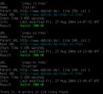
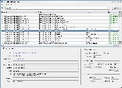

Introduction
LinkChecker is a free, GPL licensed website validator. LinkChecker checks links in web documents or full websites.
Features
- recursive and multithreaded checking and site crawling
- output in colored or normal text, HTML, SQL, CSV, XML or a sitemap graph in different formats
- HTTP/1.1, HTTPS, FTP, mailto:, news:, nntp:, Telnet and local file links support
- restriction of link checking with regular expression filters for URLs
- proxy support
- username/password authorization for HTTP and FTP and Telnet
- honors robots.txt exclusion protocol
- Cookie support
- HTML5 support
- HTML and CSS syntax check
- Antivirus check
- Different interfaces: command line, GUI and web interface
- ... and a lot more check options documented in the manual page.
Screenshots
|  |  |  |
|---|---|---|
| Commandline interface | GUI client | CGI web interface |
{kind=link}
{kind=link}
Basic usage
To check a URL like http://www.example.org/myhomepage/ it is enough to
enter http://www.example.org/myhomepage/ in the GUI client or
web interface, or execute
linkchecker http://www.example.org/myhomepage/ on the command line.
This check will validate recursively all pages starting with
http://www.example.org/myhomepage/. Additionally, all external links
pointing outside of www.example.org will be checked but not recursed
into.
Other linkcheckers
If this software does not fit your requirements, you can check out other free linkcheckers.
Test suite status
Linkchecker has extensive unit tests to ensure the code quality. Travis CI is used for continuous build and test integration.